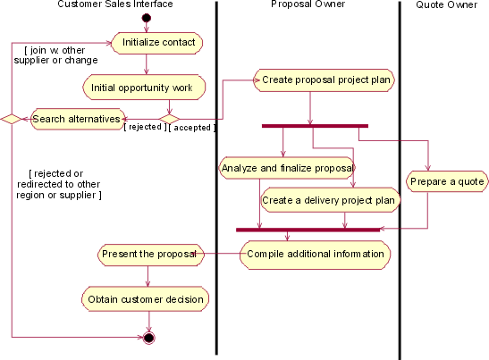
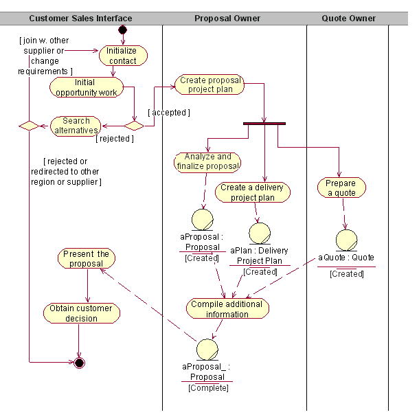

| Рекомендация: Diagrams in the Business Analysis Model |
 |
|
| Связанные элементы |
|---|
TopicsActivity DiagramsThe activity diagram notation is further explained in Technique: Activity Diagram in the Business Use Case Model. This page exemplifies how the notation is applied to describe a business use case realization. An activity diagram of a business use case realization explores the ordering of tasks that accomplish business goals, and that satisfy commitments between external business actors and internal business workers. A task may be manual automated and completes a unit of work. Activity diagrams help:
Compared to a sequence diagram, which could be perceived as having a similar purpose, an activity diagram with swimlanes and object flows focuses on how you divide responsibilities into classes, whereas the sequence diagram helps you understand how objects interact and in what sequence. Activity diagrams focus on the workflow, while sequence diagrams focus on handling business entities. Activity diagrams and sequence diagrams could be used as complementary techniques, where a sequence diagram shows what happens in an activity state. Using SwimlanesIf you are using swimlanes and the swimlanes are coupled to classes (mainly business workers) in the business analysis model, you are using the activity diagram to document business use case realizations, rather than business use cases. As an example, we show an activity diagram of the realization of the business use case Proposal process, which you can find described Technique: Business Use Case.  The realization of the business use case Proposal Process The activity diagram provides the details of what happens within the business by examining people playing specific roles (the business workers) and the tasks they perform. For application-development projects, these diagrams provide a detailed understanding of the business area that will be supported or impacted by the new application. They help establish connection points to the proposed new system, and these connection points give rise to system use cases. Using Object FlowsIn this context, object flows are used to show how business entities are created and used in a workflow. Object flows allow you to show inputs and outputs from activity states in an activity graph. There are two elements to the notation:
The object flow symbol represents the existence of an object in a particular state, not just the object itself. The same object can be manipulated by a number of successive tasks that change the object's state. The object can then be displayed multiple times in an activity graph, with each appearance representing a different state during its life. The object's state at each point may be placed in brackets and appended to the name of the class.
A generic sales process presented using object flows to show how an order changes it state while executing the workflow. See Technique: Activity Diagram in the Business Use Case Model An object flow state may appear as the target of one object flow (transition) and the source of multiple object flows (transitions).  An activity diagram for the Proposal process, using object flows to show key business entities involved Object flows can be compared to data flows within the workflow of a business use case. Unlike traditional data flows, however, object flows exist at a definite point within an activity graph. Class DiagramsClass diagrams show associations, aggregations and generalizations between business workers and business entities. The following kinds of class diagrams might be of interest:
A class diagram showing participating business workers and business entities in the business use case Individual Check-in. Communication DiagramsA communication diagram is semantically identical to a sequence diagram, but focuses on the objects, while the latter focuses on the interactions. A communication diagram should present the subset of objects relevant to the affected working sequence, including their links, messages, and message sequences. Sequence DiagramsA sequence diagram graphically depicts the details of the interaction among business workers, business actors, and how business entities are accessed, during the performance of a business use case. A sequence diagram briefly describes what the participating business workers do, and how the business entities are manipulated, in terms of activations, and how they communicate by sending messages to one another.
A sequence diagram of part of an Individual Check-in business use case. The same information that can be found in a sequence diagram can be presented in a communication diagram instead. Statechart DiagramsGenerally, you can use a state diagram to illustrate which states a business worker or a business entity can have - the events that cause a transition from one state to another; and the actions that result from a state change. A statechart diagram often simplifies the validation of the class design. For each state that an object of the class can enter, a diagram shows the messages it can receive, the actions to be carried out, and the state the object of the class will be in thereafter.
The business entity Baggage described with a statechart diagram. |

© Copyright IBM Corp. 1987, 2006. Все права защищены.. |